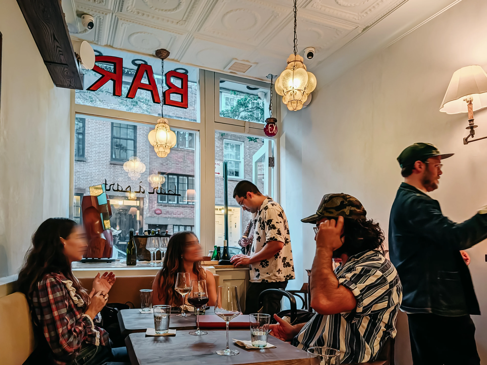
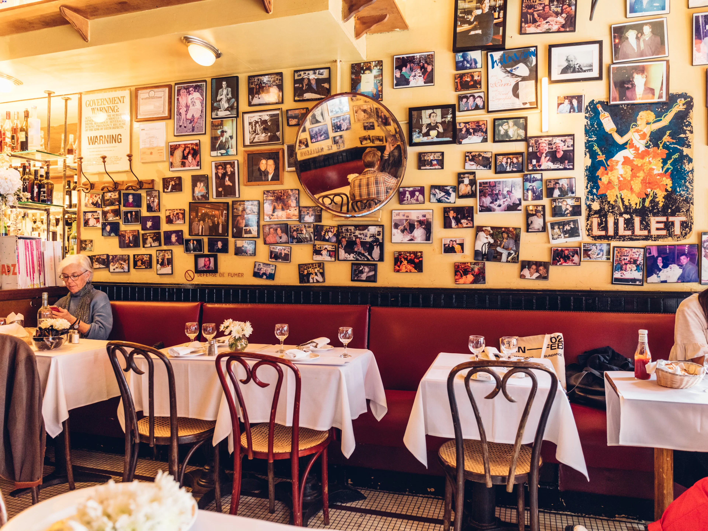

A seasonalfield guideto NYC joy
An unofficial civic-comedy collaboration proposed for Soo Ra, with an invitation to the Mayor's Office.
New York's strongest civic stories are often small: a counter, a regular, a recipe, a room where strangers become neighbors.
The proposed project uses comedy and community reporting to document the restaurants that make people feel connected during the season of joy.

Commissioner
of Joy
Soo Ra would use the title as a deliberately unofficial, seasonal storytelling device while visiting restaurants across New York City.
Important distinction
Unofficial. The title is creative language, not a city appointment, office, department, license, inspection, or endorsement.
A warm way
to talk about
neighborhood life.
Owners, workers, regulars, and neighbors lead the story.
The final list gives residents a reason to explore.
Food becomes a bridge across boroughs and traditions.
Research first.
Personality always.
Discover
Build a candidate list through neighborhood recommendations, local reporting, and community voices.
Visit
Soo visits with a small crew, asks the same core questions, and leaves room for surprise.
Document
Publish short reports and a transparent scorecard without pretending to rank a city's "best" food.
A simple rubric
for a subjective thing.
The scorecard makes the bit legible while keeping the human stories at the center.
Ten stops.
Ten kinds of joy.
A top ten should feel less like a ranking and more like a map of how New Yorkers gather.
Different neighborhoods, different traditions, one useful invitation to go somewhere.
A light-touch
civic welcome.
Participation is optional and can remain limited. The project is designed to stand on its own as an independent creative work.

Clear boundaries
build trust.
No inspection
The Joy Index is not a health, safety, licensing, or compliance rating.
No endorsement
No city seal, department branding, official appointment, or implied approval.
No pay-to-play
Restaurants are selected for story and community relevance, not purchase.
A useful little
public artifact.
Video reports
Short, accessible stories built for social sharing.
Digital field guide
A map-like list of restaurants and the joy each one offers.
Seasonal moment
A civic story that feels personal, local, and welcoming.
A compact
seasonal sprint.
Align on language, guardrails, and shortlist.
Visit, interview, and produce the field reports.
Publish the guide and invite New Yorkers to use it.
Timing is illustrative and should be confirmed against restaurant availability and any requested review process.
Let's makejoy local.
A conversation starter for Soo Ra and the NYC Mayor's Office.